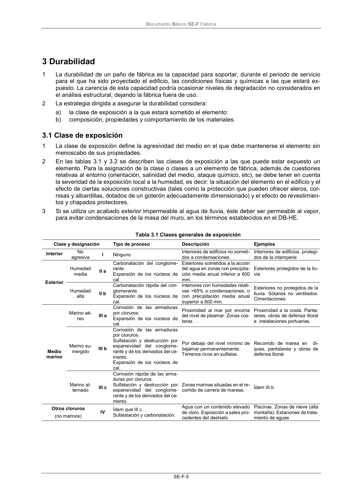

DB-SE-F · 2.4 Aptitud al servicio · versión 2019-12-20 · capa oficial
Formatos: JSON compacto · Markdown · PDF fuente
Ámbito del documento · texto del ámbito · documento y tablas
ID técnico a0026 · PDF pág. 8-9 · jerarquía no validada por persona · contrastado con el literal de la página 8 (candidato tipográfico); no validado por persona · padre: raíz
2.4 Aptitud al servicio 1 Para evitar la fisuración y asegurar la durabilidad del acero pretensado, se comprobará que, para las combinaciones de acciones del tipo casi permanente no se producen tracciones ni rotura a compresión de la fábrica. Se considerará que ya se ha transferido el pretensado, una vez producidas las pérdidas de tensión. 2 El coeficiente parcial de seguridad para acciones de pretensado, después de las perdidas, será igual a 0,90 si la armadura es postesa y el efecto de la acción es favorable, igual a 0,95 si la armadura es pretesa y el efecto de la acción es favorable, será igual a 1,10 si la armadura es postesa y el efecto de la acción es desfavorable e igual a 1,05 si la armadura es pretesa y el efecto de la acción es desfavo- rable. 3 Tras las pérdidas, se considerará que el esfuerzo de pretensado es constante. Documento Básico SE-F Fábrica SE-F-5

PDF fuente redistribuible: copia fiel enlazada en esta página (SHA256 verificado).